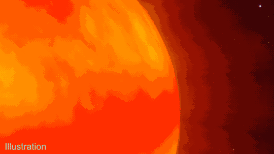

I am currently working on a multi-mission broadband spectral–timing study of the black hole X-ray binary GX 339-4 during its 2023–2024 outburst, using observations from NICER, NuSTAR, AstroSat, INTEGRAL, and XMM-Newton.
The study traces the source from intermediate states to a disk-dominated soft state, combining broadband spectral modelling, timing diagnostics, and high-resolution X-ray spectroscopy.